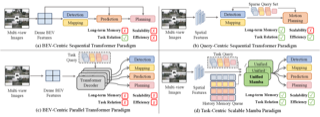

Haisheng Su (苏海昇)
Currently, I am Founding Partner of an AI startup focusing on interactive world models and embodied systems. My research trajectory has evolved from autonomous driving to embodied intelligence and foundation world models — building AI that perceives dynamic environments, predicts future states, and enables reliable action in the real world.
From 2020 to 2025, I served as Senior Research Scientist / Manager at SenseTime, including Intelligent Automotive Group (SenseAuto), leading R&D across intelligent connected L4 autonomy, V2X, cloud data closed-loop, end-to-end autonomous driving, and multimodal VLA and world model systems. I received my Ph.D. from Shanghai Jiao Tong University under Prof. Junchi Yan. At Manifold AI, I play a leading role in WorldArena, WorldScape Policy, and the World-Action Model line of research.
My work has resulted in 30+ publications, 2,300+ citations (h-index 16), and 20+ patents. Representative projects include:
- Action Localization: BSN (ECCV 2018), BSN++ (AAAI 2021), TCANet (CVPR 2021)
- 3D Perception: FreqPDE & GeoFormer (ICCV 2025), UniMamba (CVPR 2025)
- End-to-End Autonomous Driving: EgoFSD (ICRA 2026), DriveMamba (ICLR 2026), DriveMoE (CVPR 2026)
- World Models: WorldScape, WorldScape Policy
- Embodied Benchmarks: RoboSense (CVPR 2025), WorldArena 1.0 & 2.0
Research Interests: Interactive World Models, Embodied AI, Autonomous Driving, Vision-Language-Action (VLA), 3D Perception, Video Understanding.
If interested in collaboration or discussion, please email me.
News
- Jun 2026 Received Ph.D. from SJTU and was honored as Shanghai Outstanding Graduate. NEW
- May 2026 Released WorldArena 2.0 — an expanded benchmark that systematically broadens embodied world model evaluation across modality, functionality, and platform: from vision-only to visuotactile perception, from offline policy evaluation and planning to interactive RL environments, and from simulators to simulated and real-world robotic testbeds across multiple embodiments.
- Feb 2026 Released WorldArena — the first international unified benchmark for embodied world models, designed to evaluate whether world models truly understand physical laws, predict action consequences, and support robot training, policy evaluation, and action planning.
- Feb 2026 Released WorldScape Policy — a generalist robotic planner built on foundation world models, pioneering the World-Action Model paradigm.
- Feb 2026 Paper accepted to CVPR 2026: DriveMoE.
- Jan 2026 First-author papers accepted to ICLR 2026 (DriveMamba) and ICRA 2026 (EgoFSD).
- Jul 2025 Co-founded Manifold AI as Founding Partner; leading the development of foundation world models and embodied AI systems.
- Jul 2025 Completed tenure at SenseTime (2020–2025), after leading R&D across L4 autonomy, V2X, cloud data closed-loop, end-to-end driving, and multimodal VLA and world models.
- Jun 2025 Two first-author papers accepted to ICCV 2025: FreqPDE and GeoFormer.
- Feb 2025 Two first-author papers accepted to CVPR 2025: RoboSense and UniMamba.
- Apr 2020 Joined SenseTime as Research Scientist.
- Mar 2020 Graduated with M.S. from SJTU and was honored as Shanghai Outstanding Graduate.
Projects



DriveMamba / EgoFSD
Autonomous Driving · 2026Efficient end-to-end autonomous driving via scalable state-space models (DriveMamba) and a fully sparse ego-centric paradigm with uncertainty denoising (EgoFSD).

Publications
30+ papers · 2,300+ citations · h-index 16 · Full list on Google Scholar →
2026
WorldArena 2.0: Extending Embodied World Model Benchmarking on Modality, Functionality and Platform
arXiv preprint arXiv:2605.17912, 2026
WorldScape Policy: Generalizable Robotic Learning via a Foundation World Model
Technical Report, 2026
WorldArena: A Unified Benchmark for Evaluating Perception and Functional Utility of Embodied World Models
arXiv preprint arXiv:2602.08971, 2026
DriveMamba: Task-Centric Scalable State Space Model for Efficient End-to-End Autonomous Driving
International Conference on Learning Representations (ICLR), 2026
EgoFSD: Ego-Centric Fully Sparse Paradigm with Uncertainty Denoising and Iterative Refinement for Efficient End-to-End Self-Driving
IEEE International Conference on Robotics and Automation (ICRA), 2026
2025
RoboSense: Large-scale Dataset and Benchmark for Egocentric Robot Perception and Navigation in Crowded and Unstructured Environments
IEEE/CVF Conference on Computer Vision and Pattern Recognition (CVPR), 2025
UniMamba: Unified Spatial-Channel Representation Learning with Group-Efficient Mamba for LiDAR-based 3D Object Detection
IEEE/CVF Conference on Computer Vision and Pattern Recognition (CVPR), 2025
FreqPDE: Rethinking Positional Depth Embedding for Multi-View 3D Object Detection Transformers
IEEE/CVF International Conference on Computer Vision (ICCV), 2025
GeoFormer: Geometry Point Encoder for 3D Object Detection with Graph-based Transformer
IEEE/CVF International Conference on Computer Vision (ICCV), 2025
2021
Temporal Context Aggregation Network for Temporal Action Proposal Generation
IEEE/CVF Conference on Computer Vision and Pattern Recognition (CVPR), 2021
BSN++: Complementary Boundary Regressor with Scale-Balanced Relation Modeling for Temporal Action Proposal Generation
AAAI Conference on Artificial Intelligence (AAAI), 2021
Transferable Knowledge-Based Multi-Granularity Aggregation Network for Temporal Action Localization: Submission to ActivityNet Challenge 2021
CVPR 2021 HACS Challenge: Weakly Supervised Temporal Action Localization Track, 2021
🏆 Winner Solution
Transferable Knowledge based Multi-Granularity Fusion Network for Weakly Supervised Temporal Action Detection
IEEE Transactions on Multimedia (TMM), 2020
2018
Boundary Sensitive Network: Submission to ActivityNet Challenge 2018
CVPR 2018 ActivityNet Challenge: Temporal Action Localization Track, 2018
🏆 Winner Solution
BSN: Boundary Sensitive Network for Temporal Action Proposal Generation
European Conference on Computer Vision (ECCV), 2018
Academic Service
Conference Reviewer
- 2020 – Present CVPR, ICCV, ECCV, NeurIPS, ICLR, AAAI
Journal Reviewer
- 2020 – Present IEEE TPAMI, IJCV, TMM, TIP, TAI, TCSVT, TNNLS
Mentoring & Team Leadership
- 2020 – 2025 Led 20+ person R&D team on autonomous driving and mentored 20+ interns at SenseTime; co-authored 10+ papers at CVPR, ICCV, ICLR, and ICRA; 20+ granted Chinese national invention patents
- 2025 – Present Building research team at Manifold AI as Founding Partner on embodied foundation models
Awards & Honors
-
2026
Outstanding Graduate of Shanghai (Ph.D.)
Highest honor for graduates in Shanghai, Ministry of Education
-
2022
Runner-up 🥈, UG2+ Challenge: Semi-supervised Action Recognition in the Dark Track
IEEE CVPR UG2+ Challenge
-
2021
Winner 🏆, HACS Challenge Weakly Supervised Temporal Action Localization
IEEE CVPR HACS Challenge - Weakly Supervised Learning Track
-
2021
Runner-up 🥈, HACS Challenge Temporal Action Localization
IEEE CVPR HACS Challenge — Supervised Learning Track
-
2020
Outstanding Graduate of Shanghai (M.S.)
Highest honor for graduates in Shanghai, Ministry of Education
-
2020
Second Prize 🥈, National Post-Graduate Mathematical Contest in Modeling (NPMCM)
Huawei Cup NPMCM
-
2018
Winner 🏆, ActivityNet Challenge Temporal Action Localization Track
IEEE CVPR ActivityNet Challenge
-
2018
Runner-up 🥈, ActivityNet Challenge Temporal Action Proposal Track
IEEE CVPR ActivityNet Challenge
-
2018
National Scholarship for Postgraduate
Highest honor for postgraduates in China, Ministry of Education
-
2018
Excellent Graduate Student Scholarship
Shanghai Jiao Tong University — Top 10% in Automation Department
-
2018
Third Prize 🥉, Baidu Star Developer Competition
Rank 5/1371
-
2016
Third Prize 🥉, RoboMaster Competition
National College Student Robot Competition
-
2015
National Scholarship
Highest honor for undergraduates in China, top 1% nationwide
-
2014
Third Prize 🥉, National English Competition for College Students (NECCS)
Organizing Committee of National English Competitions for College Students
Experience
-
2025 – Present
 Founding Partner · Manifold AI
Founding Partner · Manifold AILeading embodied foundation model research, including embodied world model benchmark and world-action model for generalizable robotic policy learning.
-
2022 – 2025

-
2020 – 2022
Research Scientist · SenseTime
Smart City Group (SCG). Developed key video understanding algorithms for anomaly action detection in security & surveillance scenarios.
-
2018 – 2020
Research Intern · SenseTime
SenseTime Research, Shanghai. Worked on temporal action localization and video analysis during M.S. studies at SJTU.
Education
-
2023 – 2026
 Ph.D. in Computer Science · Shanghai Jiao Tong University
Ph.D. in Computer Science · Shanghai Jiao Tong UniversityAdvisor: Prof. Junchi Yan · Shanghai Outstanding Graduate · Research Interest: Autonomous Driving, Embodied AI, World Models.
-
2017 – 2020
M.S. in Control Science and Engineering · Shanghai Jiao Tong University
National Scholarship (Top 1%) · GPA: 3.72/4.0 · Shanghai Outstanding Graduate · Research Interest: Deep Learning and Video Analysis.
-
2013 – 2017
 B.S. in Automation · Central South University
B.S. in Automation · Central South UniversityNational Scholarship (Top 1%) · First-class Scholarship (Top 5%) · GPA: 91/100 (Rank: 2/170).